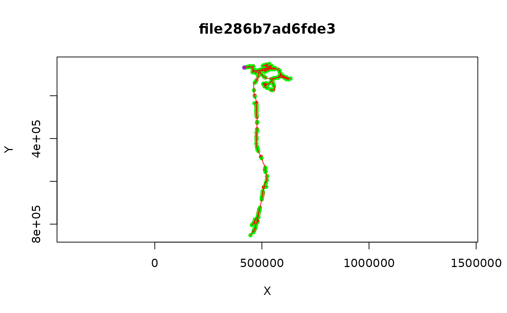

Introduction
The BANC is a female brain and nerve cord dataset imaged by Wei Lee’s lab (Minsu Kim and Jasper Phelps). See its wiki. Since the BANC infrastructure is most similar to FANC (the female adult nerve cord), we have decided to use the fancr package to provide some basic functionality to interact with the BANC dataset.
with_banc and choose_banc
Like the underlying fafbseg package, fancr has a concept of an active segmentation.
You can now use choose_banc to set the active
segmentation to BANC, which should target most fanc_
functions to use the BANC. Of course if you want to use a different
dataset (fanc, flywire) you need to remember to switch back.
A potentially less intrusive approach uses with_banc()
to temporarily switch the default segmentation to the BANC, run your
code, and then switch back again. Just wrap flywire_.* or
fanc_.* functions with this to target them at the BANC.
# supervoxel id to root id
with_banc(fafbseg::flywire_rootid('76071705504180616'))
#> [1] "720575941480707014"is this id up to date?
with_banc(fafbseg::flywire_islatest('720575941472355131'))
#> [1] FALSEFind up to date root id
with_banc(fafbseg::flywire_latestid('720575941472355131'))
#> [1] "720575941480707014"CAVE tables
cell_info=banc_cave_query('cell_info')
cell_info %>%
filter(tag2=='anterior-posterior projection pattern') %>%
count(tag)
#> # A tibble: 3 × 2
#> tag n
#> <chr> <int>
#> 1 ascending 2190
#> 2 descending 1267
#> 3 intersegmental 16Or we can just request a specific tag type
nc=banc_cave_query('cell_info',
filter_in_dict = list(tag2='anterior-posterior projection pattern'))
nrow(nc)
#> [1] 3473L2 skeletons and dotprops
BANC is already set up with an L2 cache which can be used to get rapid neuron skeletons.
n=with_banc(fanc_read_l2skel("720575941552483585"))
#> Default dataset set to "brain_and_nerve_cord".
plot(n)
Similarly we can make “dotprops” objects suitable for NBLAST.
ids <- with_banc(flywire_rootid(c("76070056370827492", "76142074315307608", "76142074315367069")))
dps=with_banc(read_l2dp(ids))
#> Default dataset set to "brain_and_nerve_cord".
plot(dps)
library(nat.nblast)
aba=nblast_allbyall(dps)
hc=nhclust(scoremat = aba)
#> The "ward" method has been renamed to "ward.D"; note new "ward.D2"
plot(hc)Using multiple datasets
If you use choose_banc() to set BANC as the default
dataset, then don’t forget to use choose_fanc() or
fafbseg::choose_segmentation() to switch to a different
active segmentation.
If you expect to switch between multiple datasets in a session, we
recommend avoiding the choose_banc() function since this
will cause all fanc_.* functions to target BANC. Instead
you can use with_banc()
with_banc(fanc_rootid(c("76070056370827492", "76142074315307608", "76142074315367069")))This does mean a bit more typing but it will probably avoid problems.
Note that you do opti to use choose_banc(), then you can
use with_fanc to ensure that any fanc function indeed
targets FANC.
choose_banc()
# a banc supervoxel id
fanc_rootid("76070056370827492")
#> [1] "720575941494603975"
# a fanc supervoxel id
with_fanc(fanc_rootid("73186243730767724"))
#> [1] "648518346499897667"